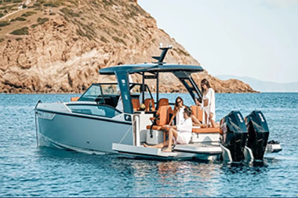
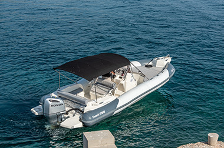
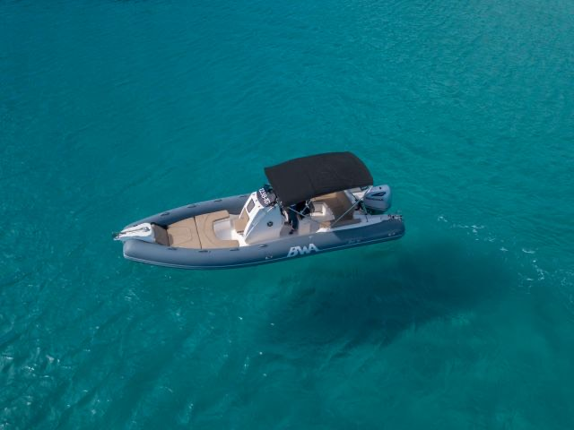
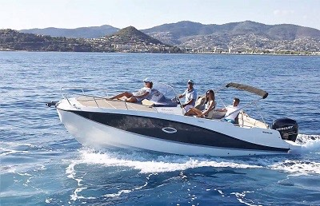
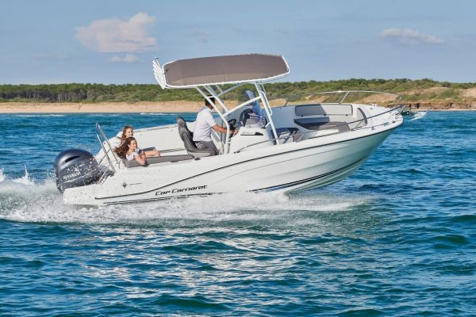
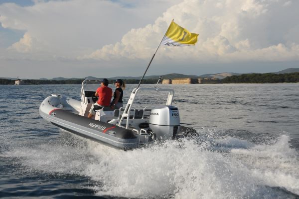
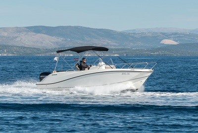
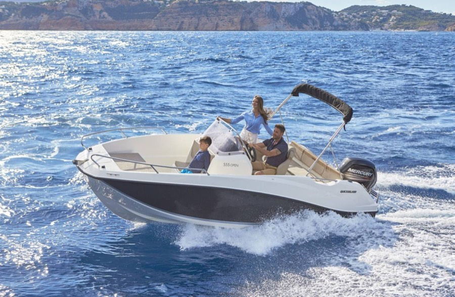
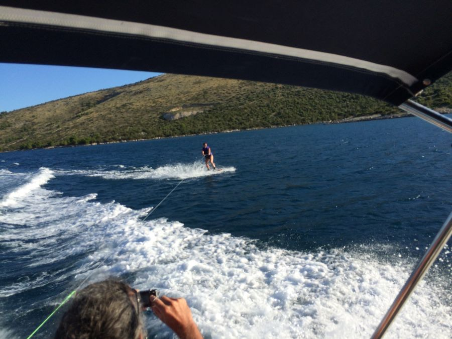

Saxdor 320 GTO
Duljina 12,00 mOsoba 12Motor 2× 300 KSBrzina 48 mph
Naslovnica / Najam brodica
Motorne brodice do 12 metara, uglavnom s izvanbrodskim motorom – za obitelj, za društvo ili za one koji samo vole brodove. Baza je u Trogiru, a brodicu možemo dostaviti i u Split, Kaštela, Primošten, na Brač, Hvar, Šoltu i druga mjesta srednje Dalmacije.
Sve brodice dostupne su bez posade (uz brodarsku dozvolu) ili sa skiperom. Niste sigurni koja vam odgovara? Javite se pa ćemo predložiti.











Za najam bez posade trebate važeću brodarsku dozvolu i putovnicu. Bez dozvole brodicu uzimate sa skiperom.
Za rezervaciju se uplaćuje 20 % iznosa u eurima, ostatak u bazi prije preuzimanja. Bankovna uplata ili gotovina.
Brodica je osigurana, uključujući odgovornost prema trećima. Povratni polog plaća se u bazi i vraća se na kraju najma ako nema štete.
Najam brodice, osiguranje, završno čišćenje i PDV. Boravišna pristojba nije uključena. Cijene su u eurima i ovise o razdoblju godine.
Najam je moguć i samo na dan ili vikend. U srpnju i kolovozu brodice su uglavnom rezervirane na tjedan ili dulje.
Brodica se vraća s punim spremnikom. Prije isplovljavanja dobivate upute o akvatoriju i o svim sustavima na brodici.

Uz brodicu možete unajmiti opremu za vodene sportove pa je ne morate nositi od kuće.